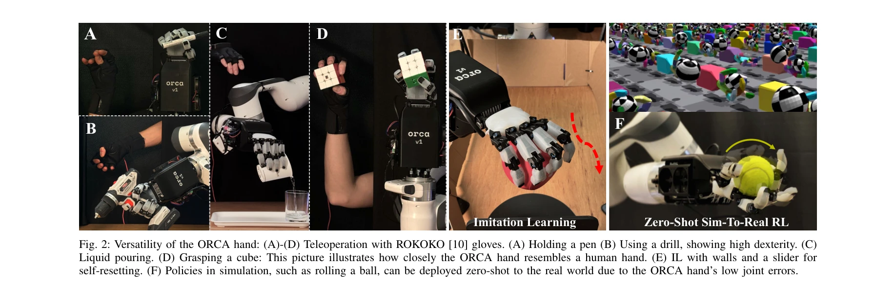
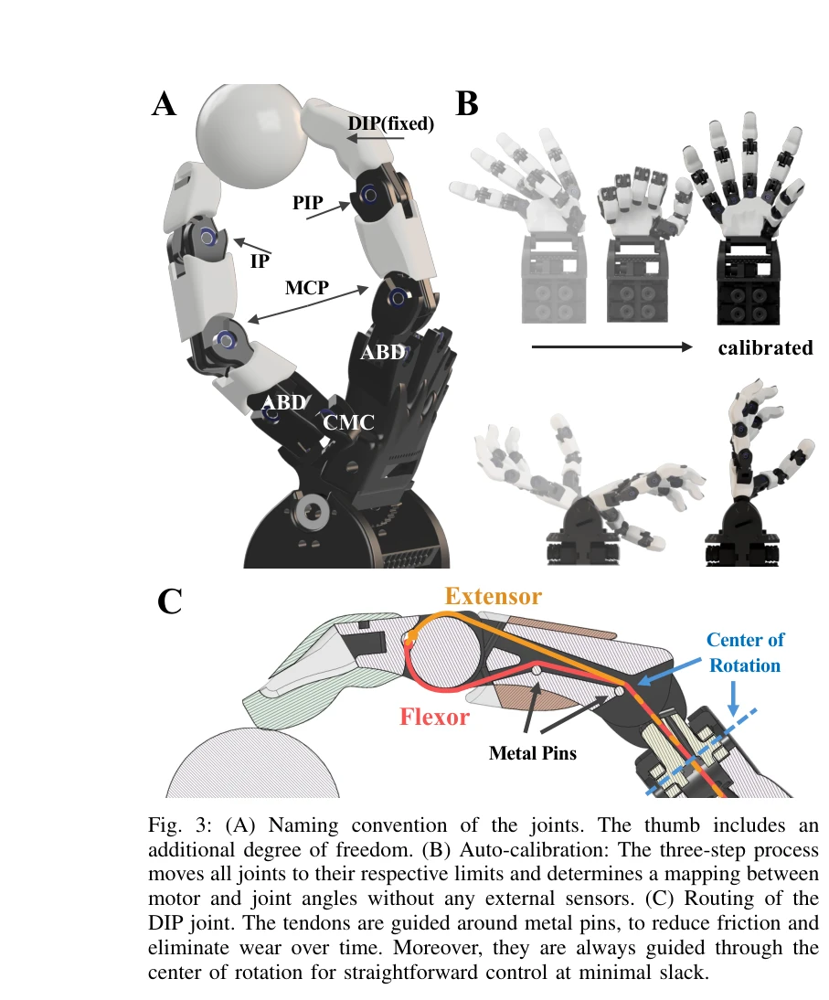

Essence

Fig. 1: (A) The ORCA hand closely mimics its human counterpart with
ORCA는 2,000 CHF 미만의 재료비로 8시간 내에 조립 가능한 오픈소스 tendon-driven 인간형 로봇 손이며, popping joints와 자동 캘리브레이션 등의 설계로 높은 신뢰성과 정확도를 달성한다.
저자: Clemens C. Christoph, Maximilian Eberlein, Filippos Katsimalis, Arturo Roberti, Aristotelis Sympetheros, Michel R. Vogt, Davide Liconti, Chenyu Yang, Barnabas Gavin Cangan, Ronan J. Hinchet, Robert K. Katzschmann | 날짜: 2025-04-05 | URL: https://arxiv.org/abs/2504.04259
Fig. 1: (A) The ORCA hand closely mimics its human counterpart with
ORCA는 2,000 CHF 미만의 재료비로 8시간 내에 조립 가능한 오픈소스 tendon-driven 인간형 로봇 손이며, popping joints와 자동 캘리브레이션 등의 설계로 높은 신뢰성과 정확도를 달성한다.

Fig. 2: Versatility of the ORCA hand: (A)-(D) Teleoperation with ROKOKO [10] gloves. (A) Holding a pen (B) Using a drill

Fig. 3: (A) Naming convention of the joints. The thumb includes an
• Tendon-driven 액추에이션으로 작은 형태 인자와 낮은 finger 관성 구현
• Popping pin joint 설계: 과도한 방사형 및 축방향 부하 시 부러지는 대신 탈구되도록 하는 원형 호형 홈 사용
• Auto-calibration: 모터와 joint 각도 간의 매핑을 외부 센서 없이 자동 결정
• Tendon routing: 금속 핀과 Teflon 튜브를 통해 PLA와의 직접 접촉 회피하여 마찰 및 마모 감소
• 래칫 스풀 메커니즘: 분해 없이 수초 내 tendon 재장력 가능
• 인간 해부학 기반 설계: 인간 손과 유사한 joint 범위(RoM) 및 형태 인자 채택
• Popping pin joint 설계의 혁신: rolling contact joint의 복잡성 없이 pinhole joint의 안정성과 ligament 기반 설계의 견고성을 결합
• Auto-calibration 기법: tendon 라우팅을 rotation 중심을 통과하도록 설계하여 외부 센서 없이 정확한 joint 매핑 자동화
• 래칫 기반 tendon 재장력 시스템: 부품 재조립 없이 빠른 유지보수 가능성 제공
• 오픈소스 기반 high-fidelity 시뮬레이션: zero-shot sim-to-real 성과로 설계 정확도 입증
• 실험 기간이 20시간으로 제한되어 장기 내구성 검증 필요
• Tendon-driven 시스템의 고유한 마찰 및 슬랙 누적 문제에 대한 장기 추적 데이터 부족
• Sim-to-real transfer 성공이 특정 작업(공 굴리기)에 국한되며 더 복잡한 dexterous task로의 확장 검증 필요
• 촉각 센서 통합의 상세 성능 평가 및 closed-loop control 활용 사례 제한적
• 후속 연구에서 더 다양한 조작 작업에서의 learning curve 및 generalization 능력 평가 필요
총평: ORCA는 tendon-driven 로봇 손의 조립 용이성과 신뢰성을 획기적으로 개선하여 dexterous manipulation 연구의 하드웨어 접근 장벽을 크게 낮춘 중요한 공헌이며, 오픈소스 공개를 통해 연구 커뮤니티의 광범위한 채택과 확장을 촉진할 것으로 기대된다.